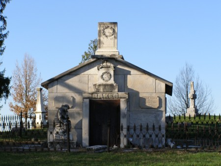

Cedar Hill Cemetery

Best known at Newark's Cedar Hill Cemetery are the legends about the Baker mausoleum, pictured above (in a photo from Grave Addiction. Put your ear to the door and you might hear the infamous ghostly banging noises and muffled voices. Another Cedar Hill tale concerns a gravestone with a carving of a baby's face which will switch directions if you stare at it for a long time, then look away for a moment and look back.
Back